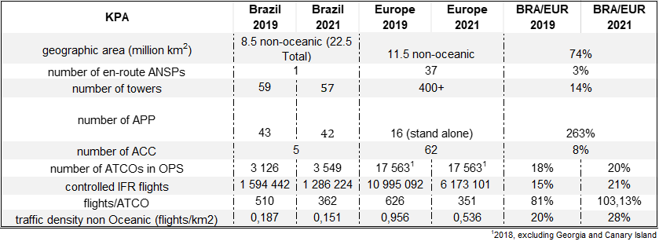

2 Air Navigation System Characterisation
This section provides a general overview of the Brazilian and European air navigation system. In general terms, the provision of air navigation services in Brazil and Europe are based on similar operational concepts, procedures, and supporting technology. However, there exists a series of differences between the two regional systems. These characteristics help to explain the similarities and differences in terms of key performance indicators observed throughout this report.
2.2 High-Level System Comparison
Starting from an initial macro-comparison, it is evident that the European environment is more complex. For example, while the European non-oceanic airspace is about a quarter larger (26%) than Brazil’s non-oceanic airspace, the number of 37 Air Navigation Services Providers already shows a totally different system complexity in terms of ATM operations compared to just one ANSP in Brazil. Figure 2.1 summarizes the key characteristics of the Brazilian and European air navigation system for 2021. Both regions operate with similar operational concepts, procedures and supporting technology. However, Brazil, with lower traffic density, finds a more challenging cost-benefit ratio to maintain communications coverage and surveillance for low-traffic regions, while the European region faces more considerable challenges in coordinating efforts to avoid congestion due to a higher density.

In terms of air traffic service provision, the comparison of the number of APP and ACC facilities is less straightforward. Several relevant differences can make conclusions difficult. While in Brazil each Approach Unit (APP) is a stand alone ATC unit, the European model sees a mix of stand alone and co-located units.
Next to the partial co-location of APP and ACC units in Europe, the higher number of ACCs reflects the local/national focus of air traffic service provision. This also becomes visible when comparing the total number of ATCOs in operations. The number of ATCOs in Brazil ranges around 20% of the numbers of ATCOs in Europe. While a crude high-level measure, the ratio of IFR movements per ATCO ranged at the same order of magnitude in 2021 (+3% in Brazil). In 2019 (pre-COVID) the European ratio is about 20% higher than in Brazil. This suggests that the staffing situation in 2021 in comparison to the overall traffic situation in both regions follows similar criteria. This needs to be contrasted with the lower traffic density in Brazil (and overall lower traffic levels). On average, the shift in traffic levels per volume of airspace is significantly lower in Brazil than in Europe. This suggests that the network connectivity in Brazil is more centralised than in Europe (lower density of flights per km2 vs similar average number of controlled flights per ATCO). The latter can also be derived from the fact that the European network also entertains a high share of intra-European traffic primarily servicing major hubs (i.e. capitals, business centres) between the European states.
2.3 Regional Approaches to Operational Performance Monitoring
2.3.1 Europe
Within Europe, the Performance Review Commission (PRC) was created by the EUROCONTROL States in 1998, following the adoption of the European Civil Aviation Conference (ECAC) Institutional Strategy the previous year. A key feature of this Strategy was that “an independent Performance Review System covering all aspects of ATM in the ECAC area will be established to put greater emphasis on performance and improved cost-effectiveness, in response to objectives set at a political level”. Subsequently, the Performance Review Unit (PRU) was established to support the work programme of the PRC. The major objective of the PRC is to provide independent advice to the EUROCONTROL Permanent Commission through the Provisional Council on pan-European ATM performance.
The EUROCONTROL PRC and PRU provide objective information and independent advice based on extensive research, data analysis, and consultation with the governing bodies and interested stakeholders on all aspects of European air navigation performance. EUROCONTROL’s performance review system was a world-first at the time it was established in the late 1990s.
The PRC’s work has been built on in wider fora, such as ICAO’s global performance-based approach, and the performance scheme of the Single European Sky (SES). The EUROCONTROL performance review system and the SES performance scheme jointly contribute towards improving the overall performance of air navigation services and network functions in Europe. PRU also supports the European region efforts of ICAO under the Doc 030 performance framework.
International cooperation and supporting further harmonisation of air navigation performance practices is one of the strategic objectives of the PRC. Within this context, the PRC is engaging with ICAO and international partners. This report is an outcome of the DECEA/EUROCONTROL MoU and the cooperation in the field of operational ANS performance. The findings of bi-lateral comparison reports are carried forward under the umbrella of multi-lateral working arrangements (e.g. PBWG). Through this harmonisation validated approaches and methods are proposed to ICAO’s GANP Performance Expert Group.
Next to two major annual pan-European performance oriented publication, i.e. ACE (ATM Cost Effectiveness) and PRR (Performance Review Report), operational performance monitoring includes a series of indicator specific data products (web-pages/dashboards, self-service reports). Within the scope of this report, respective information on operational performance be found at https://ansperformance.eu. The tab “views” provides access to data products related to the ones used in this comparison study on airport, ANSP, and national level. It needs to be noted that the indicator parameterisation used in this report differs from the parameters used within the European performance monitoring (e.g. percentiles and time frame used for the determination of associated reference time). Reported trends of this comparison report are consistent with the regional monitoring, however, the actual values of the indicator may vary. PRU is constantly expanding its online reporting on performance to provide stakeholders with independent performance monitoring data for their decision-making.
2.3.2 Brazil
The performance-based approach was adopted by DECEA as a consequence of ICAO publications in the second half of the 2000s. The concept and this form of planning gained more defined contours with the publication of ICAO DOC 9883 - Manual on Global Performance of the Air Navigation System, in 2009, following DOC 9854 - Global Air Traffic Management Operational Concept, in 2005. DECEA established a project for the development of Performance Management in 2012 within the initial activities of the SIRIUS Brazil Program (https://sirius.decea.mil.br/en/). However, essential details on the definition, metrics, and, especially, the standardisation of indicators were still a regional and global challenge.
Eventually, the effort and opportunity met with the signing of the broad-purpose Cooperation Agreement between DECEA and EUROCONTROL in 2015 and the publication of “Description of the potential Performance Indicators presented in ICAO’s Global Air Navigation Plan 2016”, which had a fundamental contribution from EUROCONTROL. On the basis of more precise process objectives and requirements, DECEA accelerated its transformation in search of organisational self-knowledge. Since 2017, DECEA published an annual Performance Report and several comparative reports, developed a series of training courses, and continuously expanded the availability of data for performance monitoring purposes including assciated analysis tools.
In 2019, DECEA’s ATM Performance Section was born to manage and coordinate activities related to performance management and represent Brazil in international agreements and forums in this field. The setup of the Performance Section was inspired by the Performance Review Unit of EUROCONTROL. With a broad and dedicated virtual environment, the Section publishes its products, data, and - in the future - recommendations for the improvement of ATM Performance (See https://performance.decea.mil.br/).
With increasing levels of expertise in operational performance monitoring and maturity in data collection and processing, DECEA published its first DECEA ATM Performance Plan 2022 - 2023 (https://publicacoes.decea.mil.br/publicaca/pca-100-3). The plan comprises the identification and definition of performance goals for twelve ICAO/Brazilian operational key performance indicators and establishes the monitoring of five complementary performance indicators. The release of this first plan is a key step in the roadmap of DECEA to implement the performance based approach in Brazil.
The performance approach is mainly about an organization’s past outcomes compared to its present and future results. However, the comparisons between peers in the universe of air navigation service improve methodologies and present opportunities for advances that would not be identified otherwise.
Within the South American region, DECEA actively promotes the open culture of trust and sharing in operational performance monitoring catalysed by the relationship with EUROCONTROL. In June 2022, DECEA was invited to coordinate a Workshop with the ICAO SAM Regional Office. Participants from Argentina, Bolivia, Chile, Colombia, Ecuador, Panama, Paraguay, Peru, Uruguay and Venezuela exchanged experiences and lessons learned with speakers from DECEA. In late 2022, DECEA will promote a Performance Seminar in the technological cluster of São José dos Campos, Brazil, the host city of the Aeronautics Technological Institute, one of the event’s supporters. EUROCONTROL was invited to participate as a partner in the seminar by sending speakers.
DECEA embraces the culture of collaboration and sharing perennially. DECEA made its indicators and databases easily accessible on public dashboards, available at https://performance.decea.mil.br/produtos/dashboard/). Thus, DECEA intends to carry forward the culture of reciprocity and transparency that has been presenting consistent results and benefiting the entire aviation community.
2.4 Summary
This chapter has shown high-level similarities and differences between both regions. The non-oceanic airspace in Brazil is about a quarter smaller than in Europe and is serviced by about 40% less air traffic service units (APP and ACC, Brazil: 47 vs Europe: 78). While on average traffic levels in Brazil ranged in 2019 and 2021 at 20% of the European air traffic, the number of ATCOs is commensurate with the traffic levels and difference in ATCO staffing numbers in Brazil and Europe.
The latter is also evidenced by the similar ratio of air traffic serviced vs numbers of ATCOs in operations in 2021. This suggests that traffic density and complexity during peak times at major hubs in Brazil may be comparable to Europe. More research is needed to asses the overall network composition in both regions. The general spread in numbers highlights that the European system is still dominated by a more nationally oriented approach to air traffic service provision, while Brazil benefits from a single ANSP set up.
The chapter also provides a summary of the regional approach to operational performance monitoring. The Performance Section of DECEA and EUROCONTROL’s PRU are actively collaborating on the international level to foster the understanding and application of the ICAO GANP performance framework, and drive the further developments and implementation in both regions. Both groups intend to deepen its cooperation in the future by expanding the scope of this bi-regional comparison report and the joint multi-lateral work.
On behalf of the four member states the EUROCONTROL Maastricht Upper Area Control Centre manages the upper airspace (from 24,500 to 66,000 feet) over Belgium, the Netherlands, Luxembourg and north-west Germany↩︎